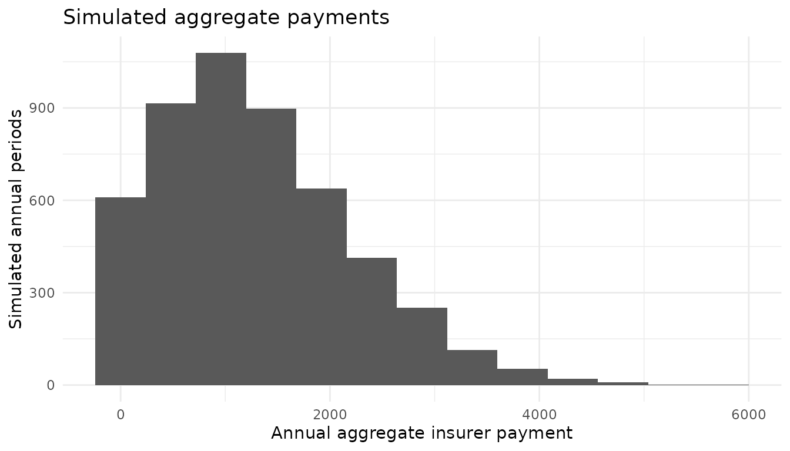

Collective Risk, Insurance Coverage, and Tail Measures
Julian Mauricio Fajardo
Source:vignettes/collective-risk.Rmd
collective-risk.RmdThe actuarial problem
Suppose an insurer covers a portfolio whose annual claim count
follows a Poisson distribution with mean 3. The individual ground-up
loss X takes the following values (in monetary units):
| Ground-up loss | Probability |
|---|---|
| 200 | 0.30 |
| 800 | 0.50 |
| 2,000 | 0.20 |
The contract has an ordinary deductible of 200, a covered-layer limit of 1,200, and 80% coinsurance. The layer limit applies after the deductible and before coinsurance. This is a pedagogical portfolio, not an estimate fitted to observed insurance data.
Let N_L denote the number of underlying loss events and
Y_L the insurer payment associated with each event
(including zero payments). The annual aggregate insurer payment is
S = \sum_{j=1}^{N_L}Y_{L,j}, \qquad N_L\sim\operatorname{Poisson}(3).
The model assumes that the individual losses are identically distributed, mutually independent, and independent of the loss count.
1. Specify frequency, severity, and coverage
For an ordinary deductible d, a covered-layer limit
L, and coinsurance c, the payment is
Y_L = c\min\{(X-d)_+,L\}, \quad (a)_+ = \max(a,0).
In the present contract,
Y_L=0.8\min\{(X-200)_+,1200\}.
Consequently, ground-up losses of 200, 800, and 2,000 generate
insurer payments of 0, 480, and 960, respectively. In
tidyactuarial, the corresponding distribution and contract
can be assembled using a native pipe:
frequency <- frequency_spec("poisson", lambda = 3)
payments <- severity_spec(
"discrete",
values = c(200, 800, 2000),
probs = c(0.30, 0.50, 0.20)
) |>
apply_coverage(
coverage_spec(
deductible = 200,
limit = 1200,
coinsurance = 0.80
)
)
model_loss <- frequency |>
collective_risk_spec(severity = payments)
model_loss
#> <tidyact_collective_risk_spec>
#> Model: S = sum(X_i, i = 1, ..., N)
#> Frequency: Poisson
#> Severity: Finite discrete
#> Count basis: lossHere collective_risk_spec() records the frequency and
per-loss payment distribution; it does not implicitly estimate
parameters or simulate claims.
2. Convert from losses to positive payments
The deductible creates a probability of zero insurer payment:
P(Y_L=0)=0.30,\qquad P(Y_L>0)=0.70.
The number of positive insurer payments therefore follows a thinned Poisson distribution with intensity
\lambda_P=3(0.70)=2.10.
The payment-per-payment severity conditions on a positive payment.
The to_payment_basis() transformation makes this
distinction explicit:
model_payment <- model_loss |>
to_payment_basis()
model_payment$count_basis
#> [1] "payment"
model_payment$thinning$probability
#> [1] 0.7
model_payment$frequency
#> <tidyact_frequency_spec>
#> Distribution: Poisson
#> Parameters:
#> lambda: 2.1
#> Support: {0, 1, 2, ...}The aggregate payment distribution does not change under this
conversion, but the interpretation of claim_count does:
simulations from model_payment count positive payments, not
underlying loss events.
3. Check the expected aggregate payment analytically
For a collective risk model with frequency independent of iid severities,
E[S]=E[N_L]E[Y_L].
The expected per-loss insurer payment is
E[Y_L] =0(0.30)+480(0.50)+960(0.20) =432.
Therefore,
\boxed{E[S]=3(432)=1296.}
The same expectation is recovered on the positive-payment basis:
E[S]=2.1\left(\frac{432}{0.70}\right)=1296.
For compound Poisson models, the variance follows
\operatorname{Var}(S)=\lambda E[Y_L^2].
The package computes the first two raw aggregate moments:
model_loss |>
aggregate_moments(order = 1:2)
#> # A tibble: 2 × 4
#> type order value status
#> <chr> <int> <dbl> <chr>
#> 1 raw 1 1296 finite
#> 2 raw 2 2578176 finite
model_payment |>
aggregate_moments(order = 1:2)
#> # A tibble: 2 × 4
#> type order value status
#> <chr> <int> <dbl> <chr>
#> 1 raw 1 1296 finite
#> 2 raw 2 2578176 finiteThe results should agree across bases. The second raw moment is
E[S^2], not the variance. It equals
Var(S) + E[S]^2.
4. Simulate aggregate payments and study tail risk
Next, simulate 5,000 independent annual outcomes from the positive-payment model. The seed makes the demonstration reproducible.
simulations <- model_payment |>
simulate_aggregate(n_sim = 5000, seed = 2026)
simulations |>
dplyr::summarise(
mean_simulated = mean(aggregate_loss),
probability_zero = mean(aggregate_loss == 0),
maximum = max(aggregate_loss)
)
#> # A tibble: 1 × 3
#> mean_simulated probability_zero maximum
#> <dbl> <dbl> <dbl>
#> 1 1287. 0.122 5760The simulated mean should be reasonably close to the theoretical value 1,296; exact equality is neither required nor expected.
simulations |>
ggplot2::ggplot(ggplot2::aes(x = aggregate_loss)) +
ggplot2::geom_histogram(binwidth = 480, boundary = -240) +
ggplot2::labs(
x = "Annual aggregate insurer payment",
y = "Simulated annual periods",
title = "Simulated aggregate payments"
) +
ggplot2::theme_minimal()
The Value at Risk at confidence level p
is the smallest value x such that
P(S \le x)\ge p. The Tail Value at Risk
averages the upper 1-p fraction of the loss distribution,
appropriately splitting probability mass at the VaR when necessary.
simulations |>
value_at_risk(level = c(0.95, 0.99))
#> # A tibble: 2 × 3
#> level value_at_risk method
#> <dbl> <dbl> <chr>
#> 1 0.95 2880 empirical_simulation
#> 2 0.99 3840 empirical_simulation
simulations |>
tail_value_at_risk(level = c(0.95, 0.99))
#> # A tibble: 2 × 3
#> level tail_value_at_risk method
#> <dbl> <dbl> <chr>
#> 1 0.95 3512. empirical_simulation
#> 2 0.99 4282. empirical_simulationBoth results are empirical Monte Carlo estimates, not exact quantiles of the theoretical compound Poisson model.
5. Calculate a stop-loss premium
For an aggregate retention d, the pure stop-loss premium
is
\Pi(d)=E[(S-d)_+].
It represents the expected annual aggregate payment above the retention, without expenses, profit loading, or discounting.
simulations |>
stop_loss_premium(retention = c(1000, 2000))
#> # A tibble: 2 × 3
#> retention premium method
#> <dbl> <dbl> <chr>
#> 1 1000 513. empirical_simulation
#> 2 2000 144. empirical_simulationThese premiums are empirical estimates from the same simulated aggregate payments. This is distinct from applying a per-claim deductible: the retention here acts on the annual aggregate amount.
6. Optional: Panjer recursion for a continuous severity model
An analytical compound frequency model with continuous severities
usually does not have a finite discrete loss grid ready for recursion.
In tidyactuarial, that approximation must be requested
explicitly.
As a separate example, consider
N\sim\operatorname{Poisson}(3) with
X\sim\operatorname{Gamma}(2,\,\text{rate}=0.005). We first
discretize the gamma severity onto a grid with step 100 and upper point
8,000, using the unbiased method, then apply Panjer recursion:
panjer_model <- frequency_spec("poisson", lambda = 3) |>
collective_risk_spec(
severity = severity_spec(
"gamma",
shape = 2,
rate = 0.005
) |>
discretize_severity(
step = 100,
to = 8000,
method = "unbiased"
)
)
aggregate_grid <- panjer_model |>
aggregate_distribution(method = "panjer", tol = 1e-7)
aggregate_grid$grid |>
dplyr::slice_head(n = 8)
#> # A tibble: 8 × 3
#> loss probability cdf
#> <dbl> <dbl> <dbl>
#> 1 0 0.0549 0.0549
#> 2 100 0.0234 0.0783
#> 3 200 0.0346 0.113
#> 4 300 0.0407 0.154
#> 5 400 0.0447 0.198
#> 6 500 0.0475 0.246
#> 7 600 0.0494 0.295
#> 8 700 0.0503 0.346
aggregate_grid$tail_probability
#> [1] 9.936311e-08Discretization changes the severity approximation. Moreover, any aggregate probability outside the computed grid is reported separately and is not renormalized away. The returned tail probability should be inspected before using grid-based risk measures. In particular, exact grid-based TVaR or stop-loss cannot be asserted while aggregate probability remains uncomputed; the package appropriately rejects such calculations.
What the workflow demonstrates
A single actuarial problem links frequency_spec(),
severity_spec(), coverage_spec(),
apply_coverage(), collective_risk_spec(),
to_payment_basis(), aggregate_moments(),
simulate_aggregate(), value_at_risk(),
tail_value_at_risk(), and stop_loss_premium().
The optional section adds discretize_severity() and
aggregate_distribution().
The pipes express a natural progression from assumptions to model to results. They do not hide the essential distinction between loss frequency, payment frequency, per-loss severity, aggregate loss, and aggregate reinsurance retention.